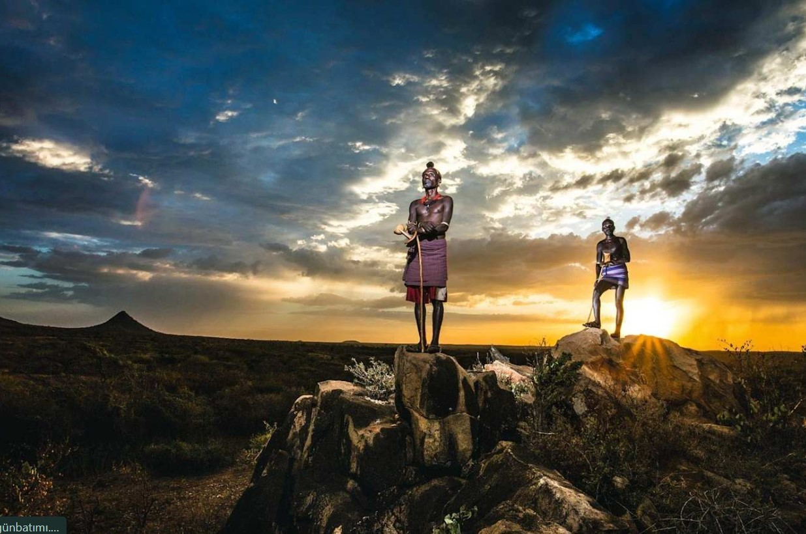

Kişisel Blog Sayfasıdır

Murat Koçgürbüz blog sayfasına hoşgeldiniz.
Kişisel Bilgiler
1986 yılında doğdum,17 yıldır Huawei-Turktelekom fttx projesinde çalışıyorum. Evliyim,1 çocuğum var,detaylı bilgiler kişisel bilgiler sayfasında verilmiştir.